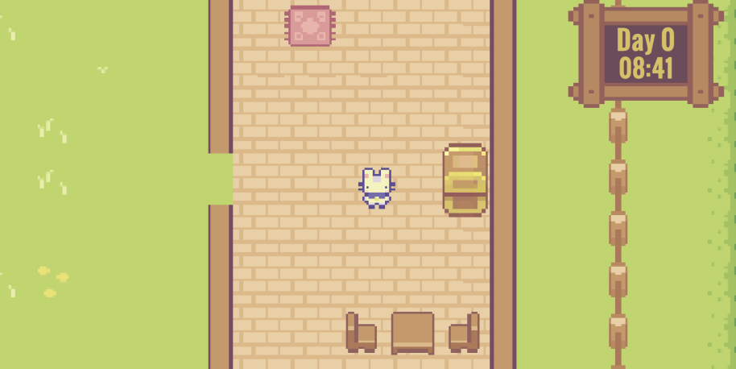

Bem-vindos ao Mind Chest
Mind Chest é um jogo de simulação de fazenda. O jogador pode selecionar entre 6 personagens fofinhos de acordo com sua preferência (Não há diferença de jogabilidade de acordo com o personagem escolhido); O jogador deve ainda interagir com os NPCs (Personagens não-controláveis) que são seus vizinhos nessa vida rural adorável. Dependendo das suas respostas os personagens demonstram emoções e conversam com o nosso personagem principal.
Clique aqui para conhecer nossos personagens!
